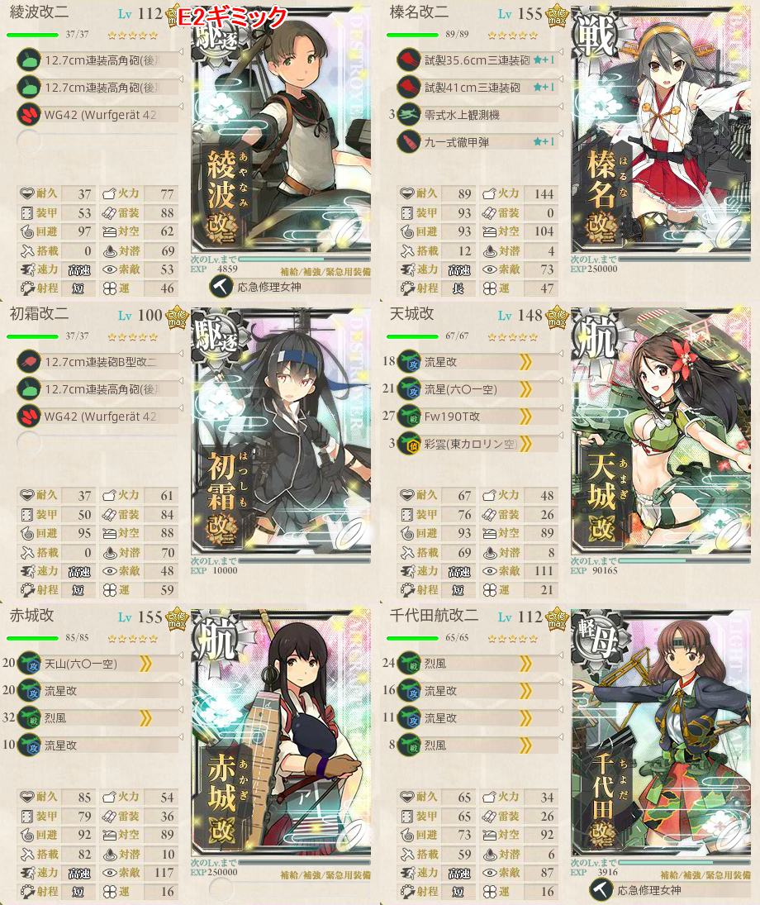
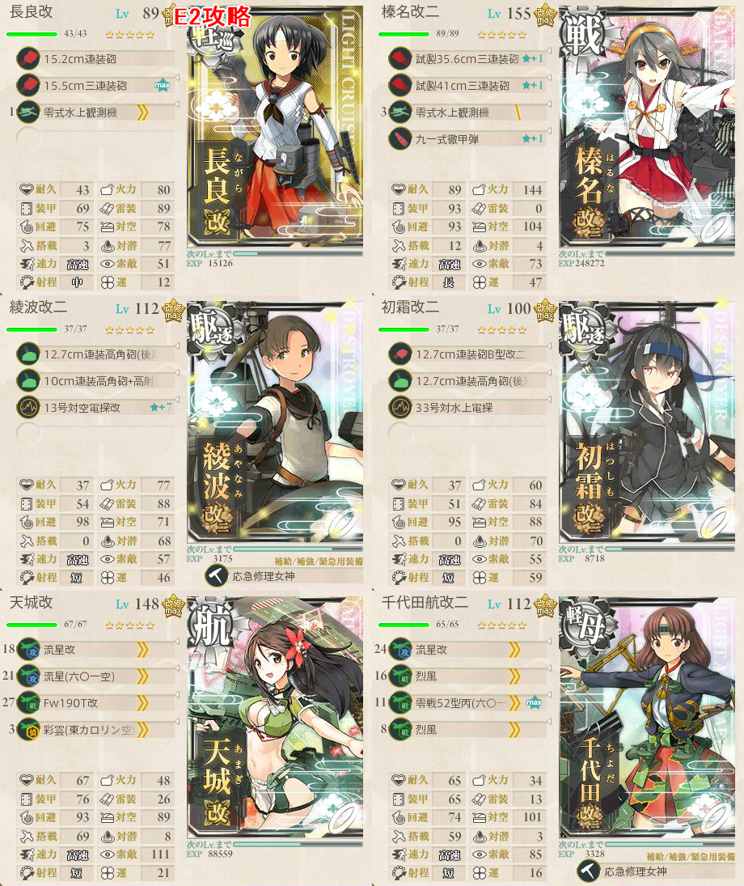

<!DOCTYPE HTML>
<html>
<head><meta name="generator" content="Hexo 3.9.0">
  <meta charset="utf-8">
  
  <title>【艦これ】西方再打通！欧州救援作戦 E2 | ぷらずま式改</title>
  <meta name="author" content="NPlasma">

  
  <meta name="description" content="NPlasmaの個人メモ">
  

  

  <meta name="viewport" content="width=device-width, initial-scale=1, maximum-scale=1">

  <meta property="og:title" content="【艦これ】西方再打通！欧州救援作戦 E2">
  <meta property="og:site_name" content="ぷらずま式改">

  
  

  
    <meta property="og:image" content="/img/ogp.png">
  

  
  <link href="/nplus_doc/css/images/favicon.ico" rel="icon">
  

  <link rel="alternate" href="/nplus_doc/atom.xml" title="ぷらずま式改" type="application/atom+xml">
  <link rel="stylesheet" href="/nplus_doc/css/style.css" media="screen" type="text/css">
  <!--[if lt IE 9]><script src="//html5shiv.googlecode.com/svn/trunk/html5.js"></script><![endif]-->
  


  <!-- baidu webmaster push -->
  <script src="//push.zhanzhang.baidu.com/push.js"></script>

</head>
</html>

<body>
  <header id="header" class="inner"><div class="alignleft">
  <h1><a href="/nplus_doc/">ぷらずま式改</a></h1>
  <h2><a href="/nplus_doc/">NPlasma個人メモ</a></h2>
</div>
<nav id="main-nav" class="alignright">
  <ul>
    
      <li><a href="/">Home</a></li>
    
      <li><a href="/nplus_doc/2016/05/29/about/">About</a></li>
    
      <li><a href="https://twitter.com/elleonard_f">Twitter</a></li>
    
      <li><a href="https://github.com/elleonard">GitHub</a></li>
    
  </ul>
  <div class="clearfix"></div>
</nav>
<div class="clearfix"></div></header>
  <div id="content" class="inner">
    <div id="main-col" class="alignleft"><div id="wrapper"><article class="post">
  
  <div class="post-content">
    <header>
      
        <div class="icon"></div>
        <time datetime="2017-08-20T20:28:38.000Z"><a href="/nplus_doc/2017/08/21/game/kancolle/event/201708-europe/201708-e2/">2017-08-21</a></time>
      
      
  
    <h1 class="title">【艦これ】西方再打通！欧州救援作戦 E2</h1>
  

    </header>
    <div class="entry">
      
        <div id="toc" class="toc-article">
          <p class="toc-title">目次</p>
          <ol class="toc"><li class="toc-item toc-level-1"><a class="toc-link" href="#ギミック解除"><span class="toc-text">ギミック解除</span></a><ol class="toc-child"><li class="toc-item toc-level-2"><a class="toc-link" href="#構成"><span class="toc-text">構成</span></a></li><li class="toc-item toc-level-2"><a class="toc-link" href="#出撃ログ（乙）"><span class="toc-text">出撃ログ（乙）</span></a></li></ol></li></ol>
        </div>
        <p>難易度：乙</p>
<a id="more"></a>
<h1 id="ギミック解除"><a href="#ギミック解除" class="headerlink" title="ギミック解除"></a>ギミック解除</h1><ul>
<li>IマスでA勝利かS勝利するとショートカットルートが開通する</li>
</ul>
<h2 id="構成"><a href="#構成" class="headerlink" title="構成"></a>構成</h2><p></p>
<h2 id="出撃ログ（乙）"><a href="#出撃ログ（乙）" class="headerlink" title="出撃ログ（乙）"></a>出撃ログ（乙）</h2><table><thead><tr><th style="text-align:center" rowspan="1" colspan="1">回数</th><th style="text-align:center" rowspan="1" colspan="1">編成</th><th style="text-align:center" rowspan="1" colspan="1">2-5式（秋）</th><th style="text-align:center" rowspan="1" colspan="1">ルート</th><th style="text-align:center" rowspan="1" colspan="1">戦果</th></tr></thead><tbody><tr><th style="text-align:center" rowspan="1" colspan="1">1</th><td style="text-align:left" rowspan="1" colspan="1">綾波 榛名 初霜 天城 赤城 千代田</td><td style="text-align:right" rowspan="1" colspan="1">63.55</td><td style="text-align:left" rowspan="1" colspan="1">DEGI</td><td style="text-align:left" rowspan="1" colspan="1">S勝利（筑摩）</td></tr><tr></tr></tbody></table>## 敵編成<br><br><table><thead><tr><th style="text-align:center" rowspan="1" colspan="1">マス</th><th style="text-align:center" rowspan="1" colspan="1">敵航空戦力</th><th style="text-align:center" rowspan="1" colspan="1">敵潜水艦</th><th style="text-align:center" rowspan="1" colspan="1">備考</th></tr></thead><tbody><tr><th style="text-align:center" rowspan="1" colspan="1">D</th><td style="text-align:center" rowspan="1" colspan="1">なし</td><td style="text-align:center" rowspan="1" colspan="1">なし</td><td style="text-align:left" rowspan="1" colspan="1">PT小鬼群x5 梯形陣</td></tr><tr><th style="text-align:center" rowspan="1" colspan="1">E</th><td style="text-align:center" rowspan="1" colspan="1">なし</td><td style="text-align:center" rowspan="1" colspan="1">なし</td><td style="text-align:left" rowspan="1" colspan="1">重巡 軽巡 ツ級 駆逐3 単縦陣</td></tr><tr><th style="text-align:center" rowspan="1" colspan="1">I</th><td style="text-align:center" rowspan="1" colspan="1">あり</td><td style="text-align:center" rowspan="1" colspan="1">なし</td><td style="text-align:left" rowspan="1" colspan="1">姫 砲台 駆逐 補給2 複縦陣 280～296で制空権確保</td></tr><tr></tr></tbody></table># 本隊<br><br>## 構成<br><br><br><br><em> 制空能力256～265でボス優勢を狙う
</em> 軽巡＋駆逐を3にして開幕とラストのルート固定<br><br>## 出撃ログ（乙）<br><br><table><thead><tr><th style="text-align:center" rowspan="1" colspan="1">回数</th><th style="text-align:center" rowspan="1" colspan="1">編成</th><th style="text-align:center" rowspan="1" colspan="1">2-5式（秋）</th><th style="text-align:center" rowspan="1" colspan="1">ルート</th><th style="text-align:center" rowspan="1" colspan="1">戦果</th></tr></thead><tbody><tr><th style="text-align:center" rowspan="1" colspan="1">1</th><td style="text-align:left" rowspan="1" colspan="1">長良 榛名 金剛 綾波 初霜 天城</td><td style="text-align:right" rowspan="1" colspan="1">72.97</td><td style="text-align:left" rowspan="1" colspan="1">ACFJLKO</td><td style="text-align:left" rowspan="1" colspan="1">A勝利（摩耶）</td></tr><tr><th style="text-align:center" rowspan="1" colspan="1">2</th><td style="text-align:left" rowspan="1" colspan="1">長良 榛名 綾波 初霜 天城 千代田</td><td style="text-align:right" rowspan="1" colspan="1">69.12</td><td style="text-align:left" rowspan="1" colspan="1">ACFJL</td><td style="text-align:left" rowspan="1" colspan="1">天城大破</td></tr><tr><th style="text-align:center" rowspan="1" colspan="1">3</th><td style="text-align:left" rowspan="1" colspan="1">長良 榛名 綾波 初霜 天城 千代田</td><td style="text-align:right" rowspan="1" colspan="1">69.12</td><td style="text-align:left" rowspan="1" colspan="1">ACFJLO</td><td style="text-align:left" rowspan="1" colspan="1">S勝利（蒼龍）</td></tr><tr><th style="text-align:center" rowspan="1" colspan="1">4</th><td style="text-align:left" rowspan="1" colspan="1">長良 榛名 綾波 初霜 天城 千代田</td><td style="text-align:right" rowspan="1" colspan="1">69.12</td><td style="text-align:left" rowspan="1" colspan="1">ACFJLO</td><td style="text-align:left" rowspan="1" colspan="1">S勝利（択捉）</td></tr><tr><th style="text-align:center" rowspan="1" colspan="1">5</th><td style="text-align:left" rowspan="1" colspan="1">長良 榛名 綾波 初霜 天城 千代田</td><td style="text-align:right" rowspan="1" colspan="1">69.12</td><td style="text-align:left" rowspan="1" colspan="1">ACFJLO</td><td style="text-align:left" rowspan="1" colspan="1">S勝利（大淀）</td></tr><tr><th style="text-align:center" rowspan="1" colspan="1">6</th><td style="text-align:left" rowspan="1" colspan="1">長良 榛名 綾波 初霜 天城 千代田</td><td style="text-align:right" rowspan="1" colspan="1">69.12</td><td style="text-align:left" rowspan="1" colspan="1">ACF</td><td style="text-align:left" rowspan="1" colspan="1">初霜大破</td></tr><tr><th style="text-align:center" rowspan="1" colspan="1">7</th><td style="text-align:left" rowspan="1" colspan="1">長良 榛名 綾波 初霜 天城 千代田</td><td style="text-align:right" rowspan="1" colspan="1">69.12</td><td style="text-align:left" rowspan="1" colspan="1">ACFJLO</td><td style="text-align:left" rowspan="1" colspan="1">S勝利（龍田）</td></tr><tr><th style="text-align:center" rowspan="1" colspan="1">8</th><td style="text-align:left" rowspan="1" colspan="1">長良 榛名 綾波 初霜 天城 千代田</td><td style="text-align:right" rowspan="1" colspan="1">69.33</td><td style="text-align:left" rowspan="1" colspan="1">ACFJLO</td><td style="text-align:left" rowspan="1" colspan="1">S勝利（夕張）</td></tr><tr><th style="text-align:center" rowspan="1" colspan="1">9</th><td style="text-align:left" rowspan="1" colspan="1">長良 榛名 綾波 初霜 天城 千代田</td><td style="text-align:right" rowspan="1" colspan="1">69.33</td><td style="text-align:left" rowspan="1" colspan="1">AC</td><td style="text-align:left" rowspan="1" colspan="1">綾波大破</td></tr><tr><th style="text-align:center" rowspan="1" colspan="1">10</th><td style="text-align:left" rowspan="1" colspan="1">長良 榛名 綾波 初霜 天城 千代田</td><td style="text-align:right" rowspan="1" colspan="1">69.33</td><td style="text-align:left" rowspan="1" colspan="1">ACFJLO</td><td style="text-align:left" rowspan="1" colspan="1">S勝利（鳳翔） ゲージ破壊</td></tr><tr></tr></tbody></table>## 敵編成<br><br><table><thead><tr><th style="text-align:center" rowspan="1" colspan="1">マス</th><th style="text-align:center" rowspan="1" colspan="1">敵航空戦力</th><th style="text-align:center" rowspan="1" colspan="1">敵潜水艦</th><th style="text-align:center" rowspan="1" colspan="1">備考</th></tr></thead><tbody><tr><th style="text-align:center" rowspan="1" colspan="1">C</th><td style="text-align:center" rowspan="1" colspan="1">なし</td><td style="text-align:center" rowspan="1" colspan="1">あり</td><td style="text-align:left" rowspan="1" colspan="1">潜水艦x3 梯形陣</td></tr><tr><th style="text-align:center" rowspan="1" colspan="1">F</th><td style="text-align:center" rowspan="1" colspan="1">なし</td><td style="text-align:center" rowspan="1" colspan="1">なし</td><td style="text-align:left" rowspan="1" colspan="1">重巡2 軽巡1 駆逐3 単縦陣</td></tr><tr><th style="text-align:center" rowspan="1" colspan="1">J</th><td style="text-align:center" rowspan="1" colspan="1">あり</td><td style="text-align:center" rowspan="1" colspan="1">なし</td><td style="text-align:left" rowspan="1" colspan="1">軽空母1 重巡1 軽巡1 駆逐3 空襲戦</td></tr><tr><th style="text-align:center" rowspan="1" colspan="1">L</th><td style="text-align:center" rowspan="1" colspan="1">あり</td><td style="text-align:center" rowspan="1" colspan="1">なし</td><td style="text-align:left" rowspan="1" colspan="1">軽空母1 重巡1 軽巡1 駆逐3 輪形陣 211～212で優勢</td></tr><tr><th style="text-align:center" rowspan="1" colspan="1">K</th><td style="text-align:center" rowspan="1" colspan="1">なし</td><td style="text-align:center" rowspan="1" colspan="1">あり</td><td style="text-align:left" rowspan="1" colspan="1">潜水艦x5 梯形陣</td></tr><tr><th style="text-align:center" rowspan="1" colspan="1">O</th><td style="text-align:center" rowspan="1" colspan="1">あり</td><td style="text-align:center" rowspan="1" colspan="1">なし</td><td style="text-align:left" rowspan="1" colspan="1">連合艦隊 駆逐x6 ネ級 軽空母1 ツ級 駆逐3 203～205で拮抗 246～256で優勢</td></tr><tr></tr></tbody></table>
      
    </div>
    
    <footer>
        <div class="alignright">
            <a href="https://twitter.com/share?ref_src=twsrc%5Etfw" class="twitter-share-button" data-text="【艦これ】西方再打通！欧州救援作戦 E2" data-url="http://elleonard.github.io/nplus_doc/2017/08/21/game/kancolle/event/201708-europe/201708-e2/" data-via="elleonard_f" data-show-count="false">Tweet</a><script async src="https://platform.twitter.com/widgets.js" charset="utf-8"></script>
        </div>
        
  
  <div class="categories">
    <a href="/nplus_doc/categories/艦これ/">艦これ</a>
  </div>

        
  
  <div class="tags">
    <a href="/nplus_doc/tags/ゲーム/">ゲーム</a>, <a href="/nplus_doc/tags/艦これ/">艦これ</a>, <a href="/nplus_doc/tags/イベント/">イベント</a>, <a href="/nplus_doc/tags/欧州救援作戦/">欧州救援作戦</a>
  </div>

        
          <div class="article-prev">
              <a href="/nplus_doc/2017/08/21/game/kancolle/event/201708-europe/201708-e3/">【艦これ】西方再打通！欧州救援作戦 E3 <span class="prev-arrow"/></a>
            </div>
        
        
          <div class="article-next">
            <a href="/nplus_doc/2017/08/15/game/kancolle/event/201708-europe/201708-e1/">【艦これ】西方再打通！欧州救援作戦 E1 <span class="next-arrow"/></a>
          </div>
        
        <!-- partial('post/share') -->
      <div class="clearfix"></div>
    </footer>
  </div>
</article>


</div></div>
    <aside id="sidebar" class="alignright">
  <div class="search">
  <form action="//google.com/search" method="get" accept-charset="utf-8">
    <input type="search" name="q" results="0" placeholder="検索">
    <input type="hidden" name="q" value="site:elleonard.github.io/nplus_doc">
  </form>
</div>

  
<div class="widget tag">
  <h3 class="title">カテゴリ</h3>
  <ul class="entry">
  
    <li><a href="/nplus_doc/categories/FGO/">FGO</a><small>47</small></li>
  
    <li><a href="/nplus_doc/categories/niconico/">niconico</a><small>3</small></li>
  
    <li><a href="/nplus_doc/categories/アニメ感想/">アニメ感想</a><small>9</small></li>
  
    <li><a href="/nplus_doc/categories/ゲーム/">ゲーム</a><small>40</small></li>
  
    <li><a href="/nplus_doc/categories/ゲーム/ゲームレビュー/">ゲームレビュー</a><small>29</small></li>
  
    <li><a href="/nplus_doc/categories/ゲーム制作/">ゲーム制作</a><small>5</small></li>
  
    <li><a href="/nplus_doc/categories/遊戯王ブロンティーズ/デッキレシピ/">デッキレシピ</a><small>4</small></li>
  
    <li><a href="/nplus_doc/categories/ライトノベル/">ライトノベル</a><small>2</small></li>
  
    <li><a href="/nplus_doc/categories/情報技術/">情報技術</a><small>11</small></li>
  
    <li><a href="/nplus_doc/categories/漫画/">漫画</a><small>2</small></li>
  
    <li><a href="/nplus_doc/categories/百合/">百合</a><small>5</small></li>
  
    <li><a href="/nplus_doc/categories/艦これ/">艦これ</a><small>76</small></li>
  
    <li><a href="/nplus_doc/categories/遊戯王ブロンティーズ/">遊戯王ブロンティーズ</a><small>4</small></li>
  
    <li><a href="/nplus_doc/categories/雑記/">雑記</a><small>4</small></li>
  
  </ul>
</div>


  
<div class="widget tag">
  <h3 class="title">最近の投稿</h3>
  <ul class="entry">
    
      <li>
        <a href="/nplus_doc/2019/09/13/engineering/hexo-table-render/">【新】HexoのMarkdownで複雑な表を書く</a>
      </li>
    
      <li>
        <a href="/nplus_doc/2019/05/09/game/edf/edf4-1/">【ゲーム感想】地球防衛軍4.1 THE SHADOW OF NEW DESPAIR</a>
      </li>
    
      <li>
        <a href="/nplus_doc/2019/04/27/game/chokaigi2019-taiken/">ニコニコ超会議2019 インディーズゲームショーケース＆プレイコーナー 感想</a>
      </li>
    
      <li>
        <a href="/nplus_doc/2019/03/02/game/kancolle/season2/3-4/">【艦これ】【第二期】3-4 北方海域全域</a>
      </li>
    
      <li>
        <a href="/nplus_doc/2019/02/26/game/atelier/nelke/">【ゲーム感想】ネルケと伝説の錬金術士たち ～新たな大地のアトリエ～</a>
      </li>
    
  </ul>
</div>

</aside>
    
    <div class="clearfix"></div>
  </div>
  <footer id="footer" class="inner"><div class="alignleft">
  <p>
  
  &copy; 2019 NPlasma
  
  All rights reserved.</p>
  <p>Powered by <a href="http://hexo.io/" target="_blank">Hexo</a></p>
</div>
<div class="clearfix"></div>
</footer>
  <script src="/nplus_doc/js/jquery.imagesloaded.min.js"></script>
<script src="/nplus_doc/js/gallery.js"></script>


<link rel="stylesheet" href="/nplus_doc/fancybox/jquery.fancybox.css" media="screen" type="text/css">
<script src="/nplus_doc/fancybox/jquery.fancybox.pack.js"></script>
<script type="text/javascript">
(function($){
  $('.fancybox').fancybox();
})(jQuery);
</script>


<div id='bg'></div>
</body>
</html>
